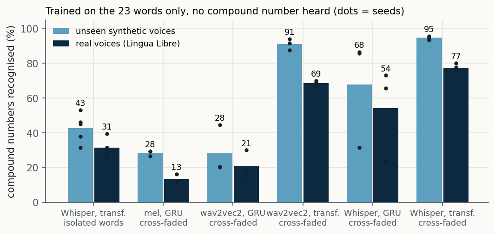
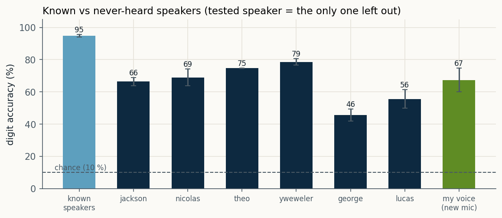
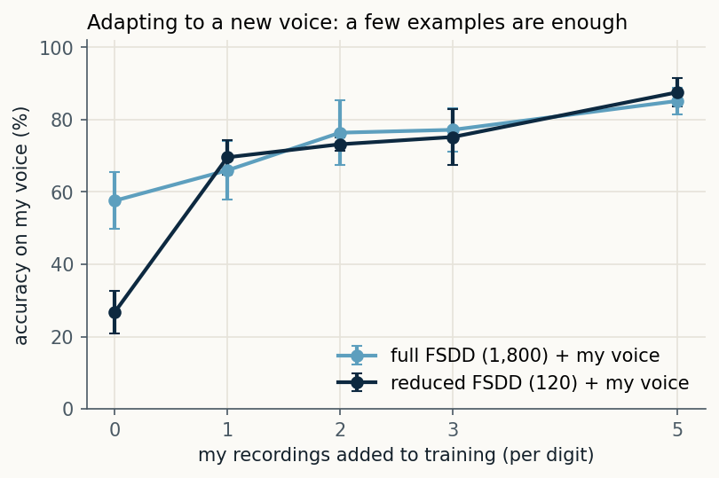
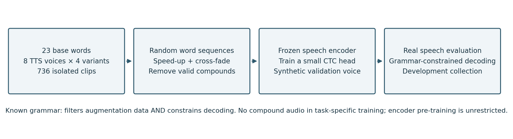
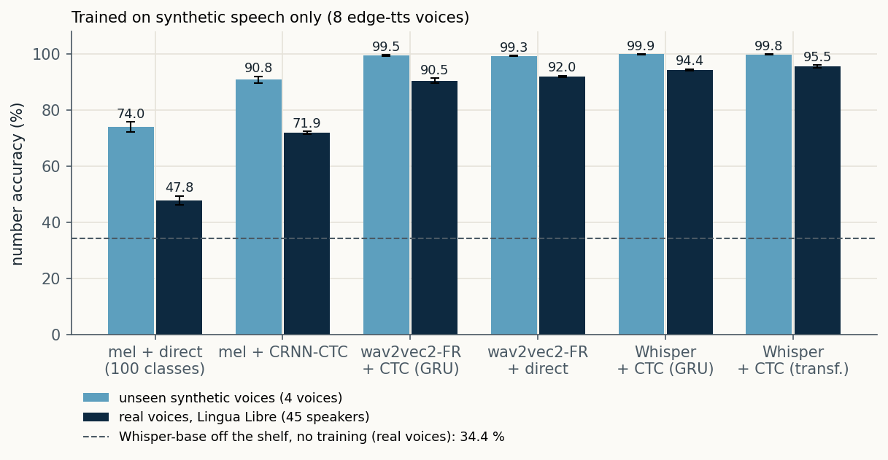
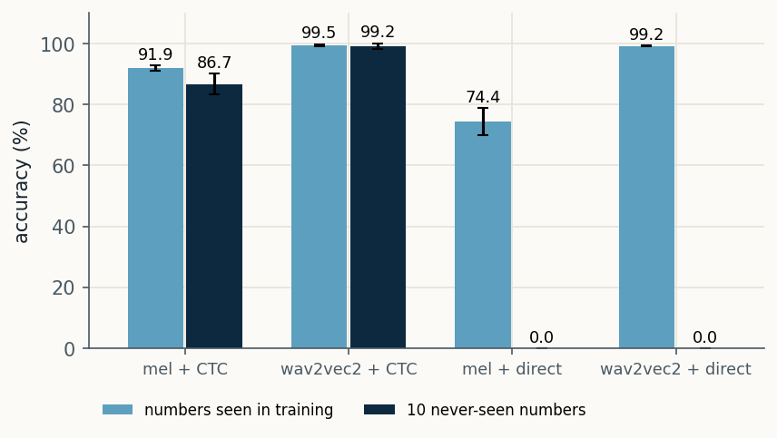
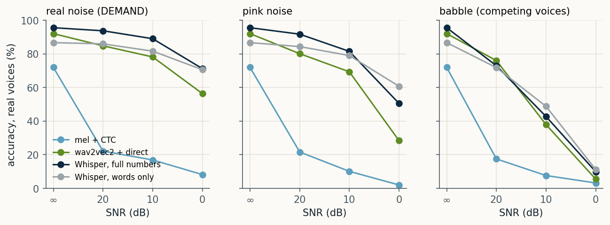
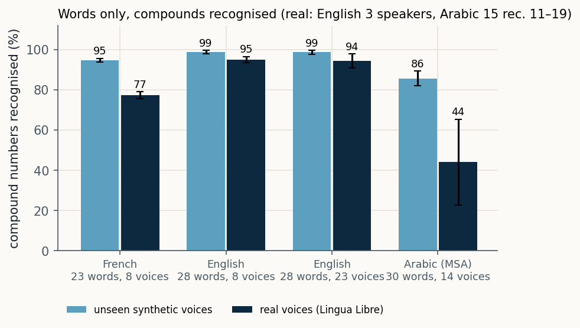

Can a recogniser learn every French number from 0 to 99 when it has only heard the 23 base words, spoken by synthetic voices? I built the recipe, tested it on 45 real people, and wrote up where it fails.

The first-year course project (with Édouard Mercier) trained a CNN on the Free Spoken Digit Dataset. On speakers it had seen, it reached 94.8 ± 0.8%. Leaving each speaker out in turn, the mean fell to 65.0%, between 45.5% and 78.5% depending on who was tested. On my own voice, recorded on a new microphone, it scored 67%.
Adding a handful of my recordings to training closed most of the gap: from 57.6% with none to 85.2% with five per digit. That only works if you can record the target speaker. The question I took further was the opposite one: how far can you go without any real recording at all?


French builds every number from 0 to 99 out of 23 words: zéro to seize, the tens vingt to soixante, and “et”. 22 numbers are a single word; the other 78 are compounds. A classifier with 100 outputs needs to hear all 100. A model that reads words can, in principle, assemble numbers it never heard.
So the recogniser outputs words, and a grammar of the 100 valid word sequences picks the number whose sequence is most likely under the model.
Words said alone are slow: in the synthetic corpus, a word on its own lasts a median 1.55 times longer than the same word inside a number. A model trained on isolated words recognises them (96.5%) but only 31.3% of real compounds. So I glue words into random sequences, sped up and cross-faded — and throw away every sequence that happens to contain a real number.

| Step | What I did | Numbers |
|---|---|---|
| Words | Each base word synthesised alone by 8 edge-tts French voices (France, Belgium, Switzerland, Canada), 4 prosody variants | 736 clips |
| Sequences | Random 2–4 word sequences in any order (“sept trente douze”), each word time-stretched ×1.1–1.9, cross-faded 20–60 ms | 3,000 drawn |
| Filter | Remove any sequence containing a valid number as a contiguous run (“sept vingt trois” contains 23) | 533 removed, 2,467 kept |
| Encoder | Whisper-base encoder, frozen, last layer (also tested: wav2vec2-FR-7K layer 8, and a log-mel CNN) | 20.6 M params, not trained |
| Head | 2-layer transformer, 4 heads, d = 128, CTC loss, SpecAugment-style masking; AdamW, OneCycle | 0.47 M params · 1.9 MB |
| Selection | Epoch chosen on a held-out synthetic voice, filtered the same way — no real audio in training or selection | 246 sequences |
| Statistics | Mean ± s.d. over training seeds; 95% interval by resampling speakers (2,000 bootstrap draws) | 3–5 seeds |
On the 453 real compound recordings, the Whisper + transformer recipe reaches 77.3 ± 1.8% (speaker interval 71.9–82.1%), and 86.7% on all 928 recordings. BiGRU heads fit the synthetic sequences almost perfectly (92–98%) but transfer poorly to real speech, and on Whisper their score depends on the seed (23, 66 and 73%) — so a good validation score did not predict real-world transfer for them.
| Training data (words only) | Encoder, head | Synthetic | Real compounds | Real, all |
|---|---|---|---|---|
| Isolated words | Whisper, transformer | 42.7 ± 8.3 | 31.3 ± 5.1 | 64.7 ± 2.6 |
| + cross-faded sequences | log-mel, BiGRU | 28.5 ± 1.5 | 13.3 ± 2.7 | 48.8 ± 0.8 |
| + cross-faded sequences | wav2vec2, BiGRU | 28.5 ± 14.0 | 21.0 ± 8.0 | 55.2 ± 5.1 |
| + cross-faded sequences | Whisper, BiGRU | 67.8 ± 31.6 | 54.1 ± 26.8 | 74.9 ± 14.8 |
| + cross-faded sequences | wav2vec2, transformer | 91.1 ± 3.2 | 68.7 ± 1.3 | 81.8 ± 1.1 |
| + cross-faded sequences | Whisper, transformer | 94.7 ± 0.9 | 77.3 ± 1.8 | 86.7 ± 1.1 |


The most frequent confusion over five seeds drops the final “et un”: 21 heard as 20 (41 times), 51 as 50 (30), 31 as 30 (25). Others drop the first word: 19 → 9, 27 → 7, 84 → 4.
These are exactly the forms that sound least like glued words: in “vingt-et-un” the t of vingt is pronounced and “et un” is reduced; “quatre-vingt” is said as one prosodic block. That is my reading of the pattern, not a tested cause.
| Real French numbers | Recordings | Words only | Full numbers |
|---|---|---|---|
| Single word (0–16, tens) | 475 | 95.7 | 95.9 |
| Tens + unit (22–69) | 277 | 90.5 | 94.2 |
| soixante-dix forms (70, 72–79) | 43 | 93.5 | 95.3 |
| dix-sept / huit / neuf (17–19) | 30 | 80.7 | 98.9 |
| quatre-vingt forms (80–89) | 61 | 44.6 | 96.2 |
| et un / et onze (21 … 71) | 42 | 18.6 | 96.8 |
Accuracy (%), Whisper encoder + transformer head.
No noise was used in training. With real background noise (kitchen, café, street) the Whisper models lose 1–7 points at 20–10 dB, and at 0 dB the words-only model (70.6%) is level with the full-number one (71.2%). Competing voices saying numbers are much harder for every model — the interference is in the target vocabulary.
The same code ran on English (28 words) and Modern Standard Arabic (30 words) by changing the word list, the composition rule and the voices. English reached 96.0% on 249 real recordings, but its compounds come from only three speakers. The Arabic test has 15 compound recordings and varies from 27% to 73% across seeds: it supports no conclusion.


Words-only needs 736 synthesised clips instead of 3,200 full-number clips: 4.35× fewer source files.
That is not 4.35× less compute. My archived timings used different accounting boundaries, so I do not claim measured compute or energy savings.
The trained head is 1.9 MB. The frugality is at the task level: the encoder’s pre-training was very costly.
Before writing the article I audited my own pipeline: fixed file lists, hashed caches, per-file prediction IDs, isolated runs, and 22 unit tests. What it cannot fix, the paper states.
The interesting part is not the 86.7%. It is that a model can name numbers it never heard, and that the honest version of the result is narrower than the first one I wrote down.
Record a new speaker cohort to turn the exploratory result into a confirmatory one.
Release code, trained heads and the real-recording list with the preprint.
Target the two weak groups (“et un”, quatre-vingt) with junction-aware augmentation.
Real recordings: Lingua Libre volunteers (CC BY-SA). Noise: DEMAND. Digits: Free Spoken Digit Dataset. All figures are my own. AI assistants were used for code and manuscript revision; study design, decisions and claims are mine.